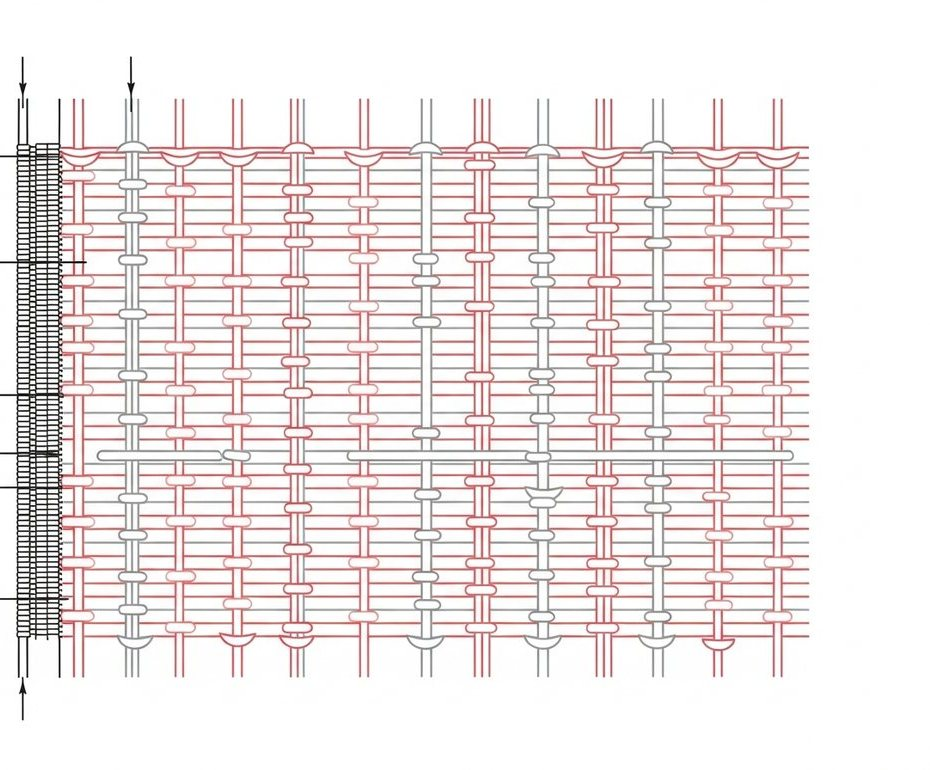
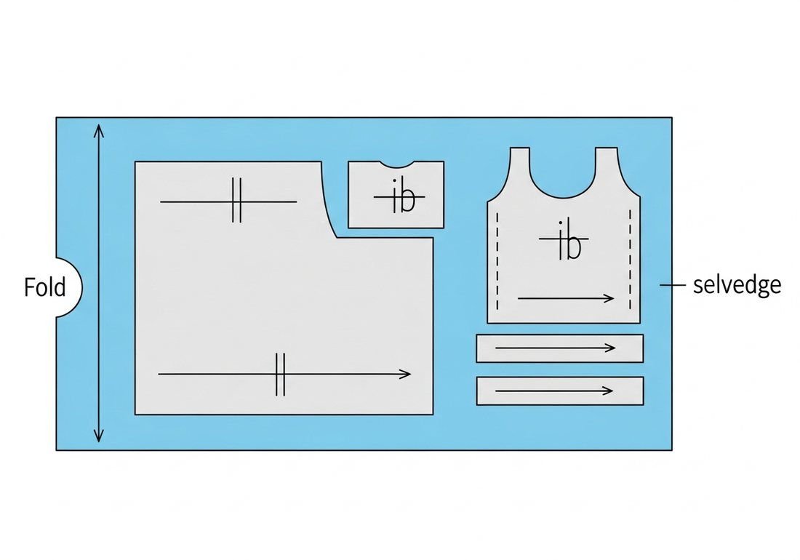
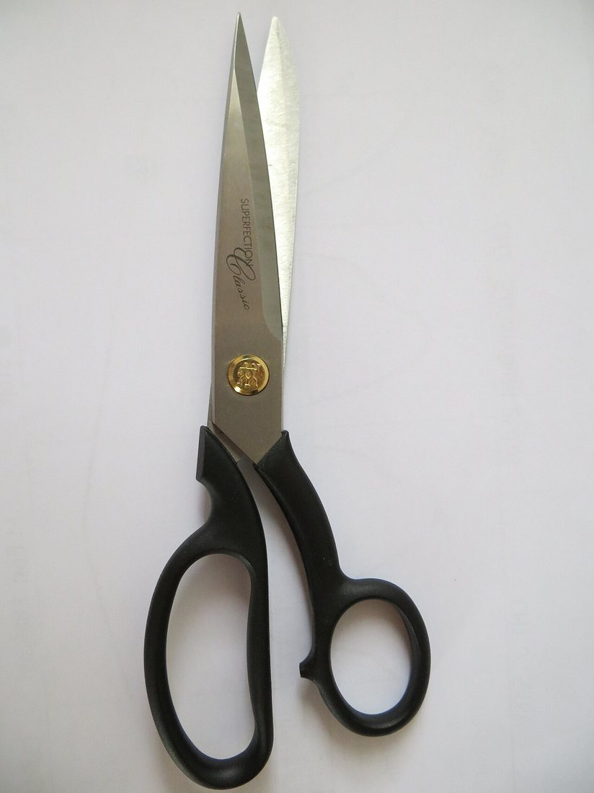
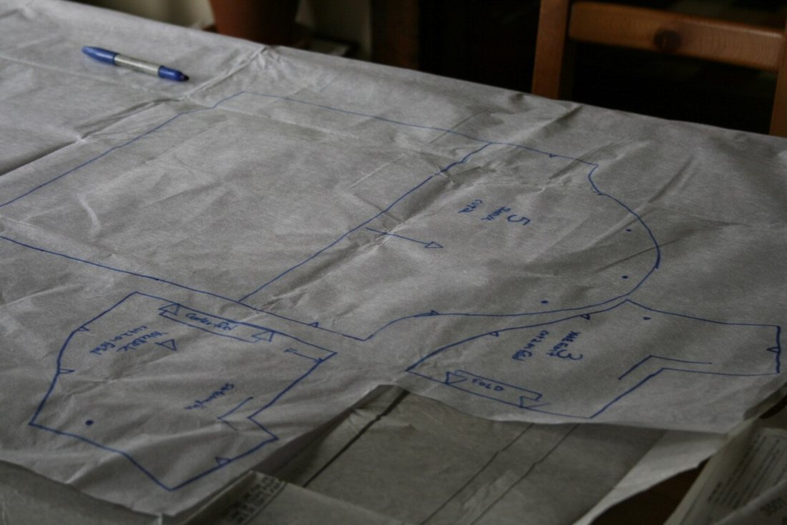

Көркем еңбек · 3-бөлім · Киім пішу және тігу Art & Craft · Section 3 · Sewing & Pattern-making Художественный труд · Раздел 3 · Конструирование и пошив одежды
✂️ Бұйым бөлшектерін пішу
✂️ Cutting Out the Garment Pieces
✂️ Раскрой деталей изделия
Лекалдарды матаға дұрыс жайып, дәл әрі үнемді пішу. Laying the pattern on fabric correctly and cutting accurately and economically. Как правильно разложить лекала на ткани и выкроить точно и экономно.
Пішу (раскрой) — дайын лекалдарды (выкройка) матаға жайып, бұйым бөлшектерін қиып алу. Бұл — тіккенге дейінгі ең жауапты кезең: қателессең, мата бүлінеді, оны кері қайтаруға болмайды. Сондықтан пішер алдында матаны дайындаймыз, лекалдарды жіп бағытына (долевая) қарай дұрыс орналастырамыз және тігіске припуск қалдырамыз. Дұрыс пішілген бөлшек — болашақ бұйымның сапасы мен пішінінің кепілі. Cutting out means laying the finished paper patterns on the fabric and cutting the garment pieces. It is the most responsible stage before sewing: a mistake spoils the fabric and cannot be undone. So before cutting we prepare the fabric, place the patterns correctly along the straight grain and leave a seam allowance. Correctly cut pieces guarantee the quality and shape of the future garment. Раскрой — это раскладка готовых лекал (выкроек) на ткани и вырезание деталей изделия. Это самый ответственный этап перед шитьём: ошибка портит ткань, и её уже не вернуть. Поэтому перед раскроем ткань подготавливают, лекала располагают правильно по долевой нити и оставляют припуск на швы. Точно выкроенные детали — залог качества и формы будущего изделия.
Матаны тану: жіп бағыттары Reading the Fabric: Thread Directions Строение ткани: направления нитей

🔍 Үлкейту үшін схеманы басыңыз🔍 Tap the scheme to enlarge🔍 Нажмите на схему, чтобы увеличить
Бойлық жіп (долевая).Warp / straight grain.Долевая нить (основа). Жиекке параллель тік жіп. Ең берік, созылмайды. Лекалдар осы бағытқа қарай қойылады.The vertical thread parallel to the selvedge. Strongest, does not stretch. Patterns are placed along it.Вертикальная нить вдоль кромки. Самая прочная, не тянется. По ней располагают лекала.
Арқау жіп (уток).Weft.Уток (поперечная). Көлденең жіп. Сәл созылады, сондықтан негізгі бағыт ретінде алынбайды.The horizontal thread. Stretches a little, so it is not used as the main direction.Поперечная нить. Немного тянется, поэтому не берётся за основное направление.
Жиек (кромка).Selvedge.Кромка. Матаның тоқылған тығыз шеті. Шіренбейді, сондықтан бұйымға кірмейді — кесіп тастайды.The dense woven edge of the fabric. It is stiff, so it is cut off and not used in the garment.Плотный тканый край полотна. Он жёсткий, поэтому его срезают и в изделие не берут.
Қиғаш (косая).Bias.Косая нить. 45° бұрыш. Ең көп созылады; бейкадан (кант) жасауға қолайлы.A 45° angle. Stretches the most; good for making bias binding.Угол 45°. Тянется сильнее всего; удобна для косой бейки (канта).
Пішер алдындағы дайындық Preparing Before Cutting Подготовка перед раскроем
Дайындықты елемесе, дайын бұйым қисайып не отырып қалуы мүмкін. If you skip preparation, the finished garment may twist or shrink. Если пропустить подготовку, готовая вещь может перекоситься или сесть.
Декатировка.Pre-shrink.Декатировка. Матаны алдын ала жуып не ылғалдап үтіктейміз — кейін отырмас үшін.Wash or steam-press the fabric in advance so it will not shrink later.Заранее стираем или отпариваем ткань, чтобы потом она не дала усадку.
Ақаулар.Check for flaws.Проверка дефектов. Дақ, тесік, тоқу ақауларын тауып, бормен белгілейміз.Find stains, holes and weaving faults and mark them with chalk.Находим пятна, дырочки, дефекты ткачества и отмечаем мелом.
Жіп бағытын анықтау.Find the grain.Определить долевую. Жиекке қарап бойлық жіп бағытын табамыз.Use the selvedge to find the straight-grain direction.По кромке определяем направление долевой нити.
Бүктеу.Fold.Сложить. Көбіне матаны бетін ішке қаратып, екіге бүктейміз (жұп бөлшектер үшін).Usually fold the fabric in half, right side in (for symmetrical pieces).Чаще складываем ткань вдвое лицом внутрь (для парных деталей).
Үтіктеу.Press.Отутюжить. Қыртыстарды үтіктеп жазамыз — қисық пішілмес үшін.Press out the creases so the cut is not crooked.Разглаживаем складки утюгом, чтобы крой не был кривым.
Лекалдарды дайындау.Ready the patterns.Подготовить лекала. Барлық бөлшектер бар ма, әрқайсында жіп бағыты көрсетілген бе — тексереміз.Check all pieces are there and each shows its grain line.Проверяем, все ли детали на месте и указана ли на каждой долевая.
Лекалдарды жаю ережелері Rules for Laying Out the Pattern Правила раскладки лекал
Дұрыс раскладка — матаны үнемдеудің кілті. A good layout is the key to saving fabric. Грамотная раскладка — ключ к экономии ткани.

🔍 Раскладканы үлкейту үшін басыңыз🔍 Tap to enlarge the layout🔍 Нажмите, чтобы увеличить раскладку
🧭 Жіп бағыты бойыншаAlong the grainПо долевой нити
Әр лекалдағы бағыт-стрелка жиекке (долевойға) қатаң параллель болуы керек.The grain arrow on every pattern must be strictly parallel to the selvedge.Стрелка долевой на каждом лекале — строго параллельно кромке.
📦 Үлкеннен кішігеBig pieces firstОт крупных к мелким
Алдымен үлкен бөлшектерді, содан кейін кішкенелерді бос жерлерге саламыз.Place large pieces first, then fit small ones into the gaps.Сначала кладём крупные детали, мелкие — в оставшиеся промежутки.
🪡 Түйреп бекітуPin downПриколоть
Лекалдарды түйреуішпен бекітеміз, сонда мата жылжымайды.Pin the patterns down so the fabric does not shift.Лекала закалываем булавками, чтобы ткань не сдвигалась.
➕ Припуск қосуAdd allowanceПрипуск на швы
Контурдан 1–1,5 см сыртқа припуск қалдырып, бормен сызамыз.Draw a line 1–1.5 cm outside the outline as the seam allowance.Обводим мелом на 1–1,5 см наружу — это припуск на швы.
Құрал және пішу процесі Tools & the Cutting Process Инструменты и процесс раскроя
🔍 Суретті үлкейту үшін басыңыз. 🔍 Tap a photo to enlarge it. 🔍 Нажмите на фото, чтобы увеличить.



Қауіпсіздік ережелері Safety Rules Правила безопасности
✂️ Қайшыны дұрыс беруPass shears safelyПередавать ножницы
Қайшыны жүзін жауып, сақинасын алға қаратып ұсынамыз.Pass scissors closed, handle-first.Передаём ножницы сомкнутыми, кольцами вперёд.
📌 Түйреуішті санауCount your pinsСчитать булавки
Жұмыс соңында барлық түйреуіш-инені санап жинаймыз.Count and collect every pin and needle when finished.В конце пересчитываем и собираем все булавки и иглы.
🚫 Аузға салмауNothing in the mouthИглы — только в игольницу
Инені, түйреуішті ешқашан аузға салмаймыз.Never hold pins or needles in your mouth.Никогда не держим иглы и булавки во рту — только в игольнице.
✅ Есте сақта ✅ Remember ✅ Запомните
1
Лекалды әрқашан жіп бағыты (долевая) бойымен қой.Always place the pattern along the straight grain.Лекало всегда кладём по долевой нити.
2
Контурдан тыс припуск қалдыруды ұмытпа.Don't forget the seam allowance outside the outline.Не забываем про припуск на швы за контуром.
3
Матаны үнемді жай: үлкеннен кішіге қарай.Lay out economically: big pieces, then small.Раскладываем экономно: от крупных деталей к мелким.
Дәл әрі ұқыпты пішу — сапалы бұйымның жартысы. Асықпай өлше, жіп бағытын сақта, припуск қалдыр — сонда әр бөлшек дұрыс жиналады. Accurate, careful cutting is half of a quality garment. Measure unhurriedly, keep to the grain, leave the allowance — and every piece will fit together correctly. Точный и аккуратный раскрой — половина качественного изделия. Меряем не торопясь, держим долевую, оставляем припуск — и каждая деталь сложится правильно.